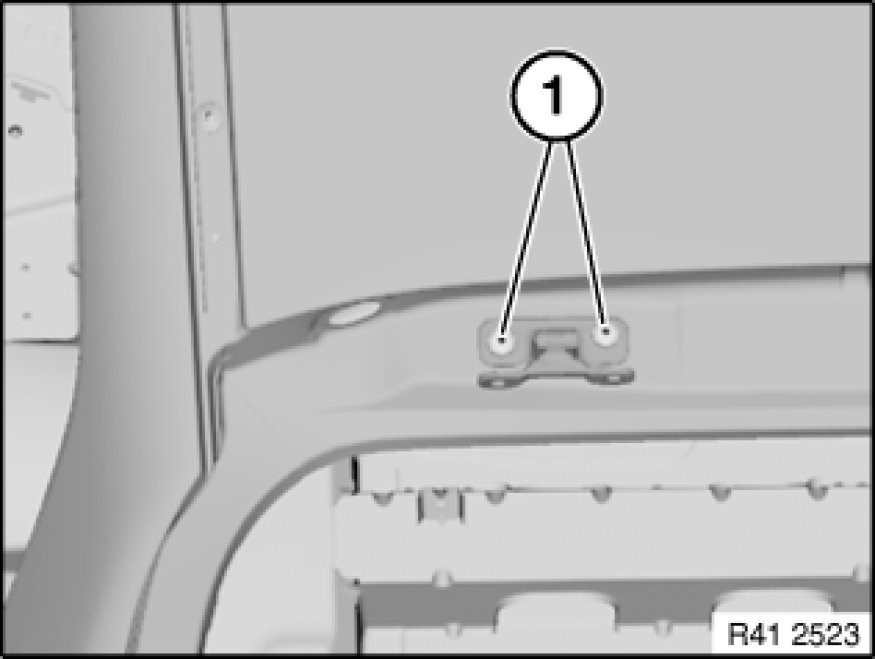

Trunk / Liftgate Hinge: Service and Repair
41 62 519 - Removing and installing/replacing left or right hinge for rear lid
Read contents of Body, General Service Precautions.

Necessary preliminary tasks:
- Remove rear lid Service and Repair

Open screw connections (1) on car.
Remove hinge.
Installation:
Adjust rear lid on basis of E83 body gap dimensions.